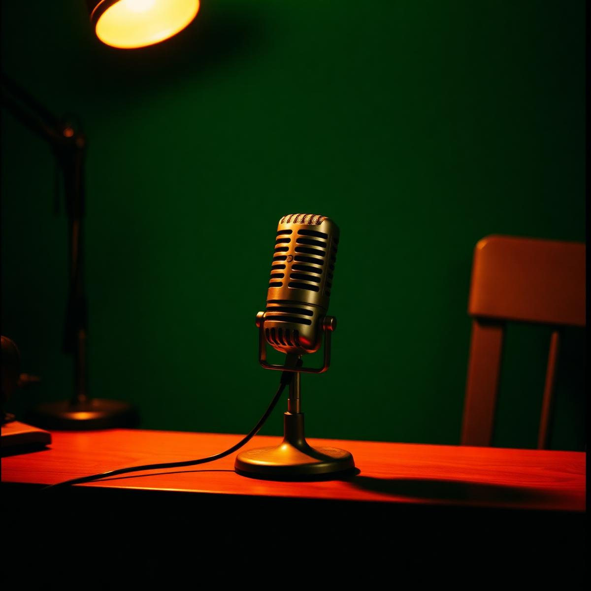

Most of what I call indecision is actually unwillingness to feel the loss of the road not taken.
— vol. 03, spring
Just
Thinking.
A collection of podcasts, essays, artwork, and unfinished ideas. A place for things worth making, slowly.
"the unfinished sentence is where thinking lives"
No. 01
Recent essays

No. 02 · The Podcast — latest
episode 12
The Shape of a Good Question
with Maya Lin · 1h 04m
A long conversation about memorials, attention, and the geometry of grief. Maya speaks slowly. We left every pause in.
No. 03
From the studio
No. 04
From the notebook
“Attention is the rarest and purest form of generosity.”
— Simone Weil
The woman in the café asked the waiter for 'a coffee, but slow'. He nodded as if this was a known order.
An interesting life is mostly a function of which boring things you're willing to do daily.